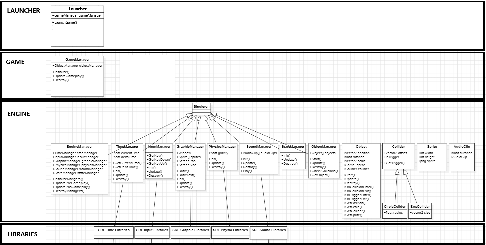

Custom 2D Game Engine

Architectural overview of the custom engine, detailing the strict decoupling between the underlying hardware abstraction (SDL2), the multithreaded core managers and the event-driven gameplay layer.
Project Overview
To deepen my understanding of low-level systems architecture and game loops, I engineered a custom 2D game engine entirely from scratch using C++ and the SDL2 library. Rather than relying on out-of-the-box solutions, I built my own memory managers, a custom deterministic physics solver, an entity-component style object hierarchy, and a multithreaded rendering pipeline. To validate the engine's capabilities, I developed two simple games on top of it: a local multiplayer Pong clone and an infinite runner featuring dynamic time-scaling.
Architecture & Core Systems
The engine is built upon a robust Singleton template design pattern, allowing global access to critical managers while strictly controlling their construction and memory allocation lifecycles:
- Entity-Object Framework: Designed an
Objectbase class acting as the foundation for all game entities. It abstracts the complexity of translation, scale, pivot-point mathematics, and sprite rendering. It also exposes a Unity-style event lifecycle (Start,Update,OnCollisionEnter), making gameplay programming intuitive. - Multithreaded Engine Loop: Implemented a
SDL_Threadarchitecture that explicitly separates the heavy logic updates from theGraphicManager's rendering loop. Thread synchronization is handled viaSDL_mutex, ensuring data integrity without causing rendering bottlenecks. - Input Abstraction: The
InputManagerwraps SDL's raw hardware events into a highly queryable interface. It supports simultaneous keyboard, mouse, and gamepads, automatically calculating controller dead-zones and providing boolean checks forGetKeyDownandGetKeyUpstates. - Data Serialization: Engineered a custom
SaveManagerfor persistent data storage. It parses and writes structured key-value pairs (Integers, Floats, Strings) directly to local text files, used for tracking high scores across play sessions.
Included Game Modules: Proving the Architecture
To validate the engine's scalability and prove that the underlying architecture is practical for actual game development, I built two distinct, fully playable games natively on top of the framework:
- Local Multiplayer Pong: This module acts as the primary stress test for the physics and rendering systems. It leverages the custom physics solver to resolve complex Circle-Square collisions between the ball and the paddles. It heavily utilizes the Input abstraction, simultaneously mapping independent keyboard keys and Gamepad axes to different local players. Additionally, it routes music and sound effects through the audio wrapper, and dynamically updates on-screen UI text elements as the score changes.
- Infinite Runner: This module was built to test data persistence and time manipulation. It utilizes AABB trigger volumes to detect when the player is grounded or has hit a fatal obstacle. Upon triggering a game-over state, it hooks into the Time system to set the global time-scale to zero, instantly freezing all game logic. Finally, it relies on the custom data serialization manager to read and write the player's high score to a local text file, tracking progress persistently across multiple sessions.
Core Implementation Highlight: Physics & Collisions
The CollisionManager is arguably the most complex system in the engine. It continuously evaluates an array of dynamic colliders (AABB Rectangles and Circles), mathematically calculating intersections such as Circle-Square overlap using closest-point bounding logic.
Crucially, it distinguishes between "solid" collisions and "triggers". When a solid collision is detected, the engine calculates the penetration depth and calls an UndoMovement function to forcefully clamp the object back to the exact pixel edge of the colliding surface, effectively preventing overlapping or tunneling.
void Object::UndoMovement(Collider* _myCollider, Collider* _other)
{
if (_myCollider->GetIsSquare() && _other->GetIsSquare())
{
// Calculate penetration delta based on the previous frame's position
// and clamp the current position to the exact edge of the opposing collider.
if (pos.GetX() > prevPos.GetX())
{
pos = Vector2(Clamp(prevPos.GetX(), pos.GetX(), _other->GetParent()->GetXWithoutPivot() + _other->GetLeftX() - _myCollider->GetRightX() + (pos.GetX() - GetXWithoutPivot())), pos.GetY());
}
else if (pos.GetX() < prevPos.GetX())
{
pos = Vector2(Clamp(pos.GetX(), prevPos.GetX(), _other->GetParent()->GetXWithoutPivot() + _other->GetRightX() - _myCollider->GetLeftX() + (pos.GetX() - GetXWithoutPivot())), pos.GetY());
}
// Repeat clamping logic for the Y-Axis
if (pos.GetY() > prevPos.GetY())
{
pos = Vector2(pos.GetX(), Clamp(prevPos.GetY(), pos.GetY(), _other->GetParent()->GetYWithoutPivot() + _other->GetTopY() - _myCollider->GetBottomY() + (pos.GetY() - GetYWithoutPivot())));
}
else if (pos.GetY() < prevPos.GetY())
{
pos = Vector2(pos.GetX(), Clamp(pos.GetY(), prevPos.GetY(), _other->GetParent()->GetYWithoutPivot() + _other->GetBottomY() - _myCollider->GetTopY() + (pos.GetY() - GetYWithoutPivot())));
}
}
else
{
// Fallback for non-square solid collisions
pos = prevPos;
}
}After resolving the physics, the manager evaluates historical state tracking (comparing the collidingBefore array against the collidingWith array) to dynamically call the correct event hooks to the object, mimicking the functionality of commercial game engines.
if (collisionDetected)
{
// Log the current collision state
colliders[i]->GetCollidingWith()->push_back(colliders[j]);
colliders[j]->GetCollidingWith()->push_back(colliders[i]);
// Physically resolve the collision if neither is a trigger
if (!colliders[i]->isTrigger() && !colliders[j]->isTrigger())
{
colliders[i]->GetParent()->UndoMovement(colliders[i], colliders[j]);
colliders[j]->GetParent()->UndoMovement(colliders[j], colliders[i]);
}
// Evaluate state history to call Enter vs Stay events
if (!colliders[i]->CollidingBeforeIncludes(colliders[j]))
{
if (!colliders[i]->isTrigger() && !colliders[j]->isTrigger())
colliders[i]->GetParent()->OnCollisionEnter(colliders[j]);
else
colliders[i]->GetParent()->OnTriggerEnter(colliders[j]);
}
else
{
if (!colliders[i]->isTrigger() && !colliders[j]->isTrigger())
colliders[i]->GetParent()->OnCollisionStay(colliders[j]);
else
colliders[i]->GetParent()->OnTriggerStay(colliders[j]);
}
}